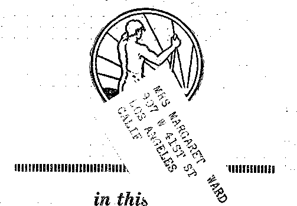

A JOURNAL OF FACT HOPE AND COURAGE
MONEY:. ITS. LIV .UNS
SOIL FERTILIZATION
ORGANIC ALUMINUM
NO MAGIC IN GRAPES
BAPTISTS RESTLESS
LOST TRIBES NOT LOST
GOOD GOVERNMENT Judge Rutherford sums up his first seven lectures on this subject
llllllllillllllllllllllllllllllllElllllllllllllllllllllllllllllllllllIII
EVERY O T HER WEDNESDAY 5c a copy - $1,00 a year - Canada & Foreign $1.50
Volume X - No, 258 August 7,1929
Contents
........r-:„ .......-----1<^58—-v.w ■ :.........—......-.........
. Labor and Economics -Passing of Skilled Labor
Social and Educational
Teaching- Geography by Cinema . , ......... . . . 708
Finance—Commerce—Transportation New York Central and Santa Fe Service......... ;
Chain Stores and Manufacturers . . . ....... . . .
Independent Grocers Fight for Existence . . . . . ■ . . - .
Money: Its Flaw’s and Injustices—at the Hands of Men . . ..-
Political—Domestic and Foreign
The Kernel of Militarism..............• ■
Restrictions of Liberty in Russia
The Harris Letter to President Hoover ........... 710
Agriculture and Husbandry Fertilization of the Soil .
Science and Invention The Heinkel Catapult . .....
Home and Health
A Paragraph from a Government Letter .......... 718
An Experience in Tonsillectomy .....
An Apostle to Aluminum Sufferers
Organic Aluminum Is a Poison Too
Religion and Philosophy Southern Baptists Getting Restless .... The Day of the Alarm Clock ApproAciieth . . Bible Questions and Ansivers . ......
721
725
725
727
734
735
Good Government............
The Never-lost Ten Tribes ........ The Children’s Own Radio Story ......
Published every other Wednesday at 117 Adams Street, Brooklyn, N. Y., U. S. A., by ' WOODWORTH, KNORR & MARTIN
Copartners anti Proprietors Address: 117 Adams Street, Brooklyn, N. Y., V. 8. A.
CLAYTON J. WOODWORTH .. Editor ROBERT J. MARTIN .. Business Manager NATHAN H. KNORR .. Secretary and Treasurer
Five Cents a Cory—SI.00 a Year Make Remittances to THE GOLDEN AGE
Notice to Subscribers: We do not, as a rule, send an acknowledgment of a renewal or a new subscription. A renewal blank (carrying notice of expiration) is sent with the journal one month before the subscription expires. Change of address, when requested, may be expected to appear on address label within one month.
Foreign Offices
British ............. .‘3 i Craven Terrace, London, W. 2, England Canadian ........... 40 Irwin Avenue, Toronto 5, Ontario, Canada A ustralasian . . 7 Beresford Rd., Strathfield, Sydney, N. S. W., Australia South Africa ......... ... 6 Lelie Street, Cape Town, South Africa
Entered as second-class matter at Brooklyn, N. X., under the Act of March 3, 1879.
Volume X Brooklyn, N. Y., Wednesday, August 7, 1929 Number 258
INDIA enjoys a first-class postal service. Last year some 548,000,000 letters w7ere carried, besides other hundreds of millions of pieces of other kinds of mail, with a total non-delivery of only four one-hundredths of one percent. Automatic telephones are in use in all the principal cities.
"DOTH the Pennsylvania Railroad and the
New York Central are now operating combined air and rail service from coast to coast. The Pennsylvania has two nights by rail and tw’o days by air, at a rate of $350; while the Central has three nights by rail and only one day by air, at a rate of $250. The Central air hop is from Cleveland, Ohio, to Garden City, Kansas.
A GERMAN inventor has designee, a new form of catapult for hurling airplanes into the air from the decks of liners. The plane rests directly in front of the mouth of a cylinder of compressed air. When the air is released, the sleigh, with its burden, is shot in two-thirds of a second over a greased track thirty-six feet long, which speed is sufficient to enable the plane to remain in the air thereafter.
A SHEPHERD dog, specially trained for the purpose, has shown that it is entirely competent to guide a blind man across the busiest corner in the world, Fifth Avenue and Forty Second Street, New York, at the busiest hour in the day. The blind, man tells by the tug on the harness whether to go forward or backward, or whether to slacken his pace or lift his foot for the curb. It is hoped to train other dogs to render the same service.
TURKEY is still struggling with her alphabet. The people are finding the letters hard to read and harder to use.
new new The
circulation of the ten magazines formerly printed in Constantinople has fallen off to one-tenth of what it was while they were still published in Turkish characters.
JPrank II. Simonds, noted newspaper correspondent, declares that in ten years the League of Nations has not carried disarmament one step forward. He says: “Everybody has signed the Kellogg Pact, thus renouncing war as a policy, but the ratification of this solemn instrument has not contributed to the disbandment of even a corporal’s guard or the scrapping of a single torpedo boat.”
TXT AR, while a great curse, does produce some ’ “ minor benefits. Out of the World War has grown the general use of gas masks in mine rescues, with good results. Besides this form of protection of rescuers there is also the selfcontained oxygen-breathing apparatus, now -available in many parts of the country. Several thousand sets have been sold in the United States.
Holy Water and Tobacco
TAURING the month of April, in the city of Bath, England, the firm of Charmbury and Son embarked in the tobacco business. Not wanting to run any chances of failure they engaged the services of the Rev. H. G. Gooding to go around through the shop and sprinkle the walls with holy water before the doors were opened. Needless to say this guarantees that the angels will hereafter take special care of this tobacco business. HAR! HAR!
IT HAS been decided to make San Antonio the official center of America’s air fleet. The site selected covers five square miles of ground. It lies a few miles east of San Antonio and will be large enough to enable 250 planes to take . the air at once.
A FTER several stormy years the Irish Free State is now said to be in excellent condition. The taxation per capita has been reduced, the national debt is small, the budget is in balance, emigration has been curbed, and agriculture and other industries are prospering.
BEING homesick and knowing about transatlantic telephony a Toronto servant girl called up her folks in London. She did not know till afterward that it was going to cost her $50, but she knows it now and will now stay away from the telephone when she is homesick,
DECREES have been issued by the Indian government which it is expected will result in the ousting of women from Hindu mines within the next ten years. At present there are 32,000 women working underground in India, at an average daily rate of pay of 16c,
Judge Mokoney, of New York, instead of sentencing a drunken auto driver to fine and imprisonment, held him to the payment of all the hospital and medical expense that his carelessness had caused. In all, this set the wild driver back about $600 and probably accomplished much more than even a term in jail.
Jacob BiLLiKoni', executive director of Jewish
Charities in Philadelphia, says that not in years have charitable organizations been so burdened with the care of needy families in their own homes. By reason of improved machinery those who are employed earn more than ever before, but fewer are called to work and there are more unemployed.
LONDON has begun an experiment of teaching geography by cinema, and it seems to work well. Instead of being shown so many smudges on the map and told that this is such and such an island, the children are shown moving pictures of the peoples, plants, animals, industries and other activities and get a far better idea than could ever be had from maps alone.
npiIE Spanish dictatorship concerns itself -*• with the smallest and most personal affairs of its citizens, such as the establishment of new factories, new systems of industrial production, the limitation of production, the importation of certain articles, etc.
TABBING- the year 1928 five hundred and thirty-two places of public worship were closed by majority vote of the local population. These churches have been turned into clubs, public schools, libraries, hospitals and other places of public interest.
TN CZECHOSLOVAKIA seventeen men and two women are on trial for their lives on the charge of cannibalism. The accused men are all between the ages of 19 and 29. They are accused of six murders, and are believed guilty of many more. The women hauled the corpses into camp, dismembered and cooked them.
rpiIE Manchester Guardian points out that a post mortem examination of seventeen of the twenty-four victims slain in the May-day riots at Berlin shows that all were killed by police bullets. Not a shot was fired by any civilian against the police, and the streets were at no time in any danger from the activities of the Communists.
LAST year the British and Foreign Bible
Society distributed nearly eleven and one-half million copies, an advance of nearly half a million over the previous year. One or more complete books of the Bible are now to be had in 618 languages, 203 of which are African tongues. The complete Bible is to be had in 146 versions.
FOR twenty years a white dolphin, Pelorus Jack, met every steamer entering Pelorus Sound, New Zealand, escorted it for five miles, and then disappeared. Jack has now disappeared. There was an order in council of the New Zealand government against anybody’s killing him. It is supposed that he may have become entangled in the propeller of a vessel and thus been accidentally slain.
AT FUSIIUN, Manchuria, a Japanese mining company has moved an entire town of 40,000 people a distance of three miles in order to enable them to get immediate access to a vast coal deposit underlying the city. From this deposit last year they averaged to dig 30,000 tons of coal a day. The seams reach a maximum depth of 3,000 feet and are estimated to contain well over a billion tons.
ARMENIAN artig dufa sounds like something strange, does it not? Well! It surely is strange, as strange as it sounds. Artig is the name of a town. Nothing so very strange about that. But dufa is strange. It is a form of lava, very plentiful near Artig, which may be sawn and planed and nailed and painted any color and behaves just like wood, except that it is permanent. It makes an ideal building material, and as ideal for the furniture as it is for the house itself. It is light and tough, and will withstand great strains. Heat and sound penetrate it very little.
MALTA is a Roman Catholic appendage of a Protestant country, Britain. In practice the rulers of Malta are Catholics, but civil law is paramount to ecclesiastical law. Recently the Vatican desired to punish a certain monk by sending him out of the island so that he could be imprisoned in a monastery in Sicily. Three times the order has been given and three times the governor of the island has refused to issue the necessary passports on the ground that under British law not even the governor himself can banish a man from his homeland. Meantime all kinds of threats are being made against the governor, but he stands firm.
rpHE Lloyd Dam at Bhatgar, India, is 190 feet high and nearly a mile in length, and is built of twenty-one million cubic feet of masonry. The dam cost $6,000,000 to construct, and took five years to build. It will furnish irrigation for an area of about six million acres and is at this time the largest single irrigation project dam in the world.
rfHE British government, cooperating with the provincial government of Alberta, will give young men 17 to 25 years of age a month’s free instruction in a government agricultural college, and then find employment for them on a farm, with the ultimate object in view of training them to take up farming on their own account. Seems like a long step in the right direction.
TN THE year 1886, in the city of Buffalo, N. Y., at a convention of the American Association for the Advancement of Science, an aged engineer who attempted to read a paper showing that it would be possible for human beings to invent a machine in which they could fly, provided enough power could be applied to it, was requested to discontinue reading his paper and to leave the platform. No doubt Buffalo has people who still believe or try to believe the doctrine of eternal torture, but it surely has learned something about airplanes, anyway.
Henry Ford has found a use for the clergy.
In an article in the Red Book magazine he argues that, instead of preaching about booze, the clergy should spend their time teaching the people what to eat, and that if properly instructed on this point they would not be craving for liquor. Senator Copeland indorses Mr. Ford’s view, but thinks the children should be taught the right combinations of food in the schoolroom. If his idea should be carried out the clergy would not have a solitary thing left to do, but would be compelled to take up some honest and productive form of employment. The day of the alarm clock neareth: it hasteth greatly.
IT WAS brought, out in the Federal trade investigation of chain stores that manufacturers have sold to the chain stores at less than to the independents, have given them free goods : in order to introduce their wares, and have given them rebates on goods sold. The independents are now mad all the way through and will put the goods of such companies under their counters, forcing people to call for them, and will refuse to give such concerns any orders and will tell their salesmen why. The Independents still claim to control 70 percent of the grocery business of the country—a problematical claim.
Independent Grocers Fight for Existence
THE Independent Grocers have declared war on the chain stores which now threaten their existence. Their executive secretary, Harry W. Walker, of Baltimore, says feelingly: ‘'That there is a predatory, avaricious and heartless money class in this country striving for dominant power, with an unscrupulous disregard for the rights of others, none can deny. The Supreme Court of the United States has decided that large size and great wealth is no evidence of wrong-doing; but just the same, it is a pretty good clue where to look for wrongdoing. The so-called Captains of Industry, with their efficiency experts trying to cut down overhead by decreasing wages, laying off men and increasing the hours of labor, are not Captains of Industry, but Pirate Chieftains and Bandit Leaders.”
HDHE kernel of militarism is contained in the -*• following statement of a military man to a group of professed Christians. It states the matter just as it is. Every Christian must, in the face of this statement, be a pacifist or be nothing at all, give it all up.
The trouble with you church people is that you are not willing to back up your theories with your life, or even with your property. When one qf us military men believes in war he . is willing to go to war and be shot at. This you church people are not willing to do. Therein lies your great weakness. Whenever you are willing to pay the price of putting your principles into effect, then we military men will be obliged to retire. Our strength is due to your weakness.
Restrictions of Liberty in Russia
T) ELIGIOUS groups in Russia may not found mutual aid societies, nor have cooperative stores or workshops, nor hold prayer meetings for women or youths, nor maintain Bible study or sewing circles, nor open lending libraries, nor give medical advice or aid, nor organize excursions, nor operate playgrounds, nor have in their possession any books other than those directly used in worship, nor establish any fund for collecting donations, nor purchase or lease property of any sort, nor make any agreements whatsoever. No meetings can be called without written permission of.the authorities, and all minutes and resolutions must be sent in duplicate to the Home Office. Russia is determined to blot out the very existence of religion.
The Harris Letter to President Hoover
THE letter of Wm. W. Harris, Jr., major in the U. S. Army (retired), Clemson College, S. C., to President Hoover, has attracted considerable attention. The letter follows:
Sir: I request that you have arrangements made —through legislation if necessary—for stopping the retired pay, which is now being paid to me, or rather into the account being held for me, as a pension for former service rendered by me as an officer of the United States army.
I have accepted Christ, and I love him with my whole heart. I cannot imagine Jesus stabbing men to death with a bayonet, or destroying their lungs with poison gas. Would I not be a fool if I claimed to be a follower of Christ, and at the same time engaged in doing those things which I know He hates ?.
That this retired pay is one of the many schemes by which the Beast buys men’s souls, and engages them to do his murdering for him, has become very apparent to me. I therefore, in the name of Almighty God, before whom I stand, have the honor to inform you, sir, that I shall in the future refuse to kill my fellow men at anybody’s command, and I shall refuse to accept any money which may be offered to me in the future as compensation for having engaged in that business which I now hate with all my heart and soul.
There are millions of Christians who, strengthened by Christ, will stand like a great rock, when antichrist, in his lust for gold and for glory, tries to force them into his great murder machine, to kill their fellow men. Who are the great beasts of the earth that we should bow down to them? Not by the power of Satan’s might, but by the Spirit of God we shall stand.
Money: Its Flaws and Injustices—at the Hands of Men By F. W. O’Neill
S FAR as Wall Street is concerned, there are two classes of people: those who gamble (they call it promoting and trading) and those who do not.
All will enjoy Mr. O’Neill’s article, but there will not be any Bible Students who will make preparation for the impending collapse, or even try to. They went through that experience fifteen years ago. When the big smash does come, the only safety will be in the Lord, and unless He grants deliverance to His people, and miraculous deliverance, too, all hope is vain. The Lord alone will be exalted in that day. Meantime, publish the truth, publish it, publish it. The time is short.—Editor.
True servants of the Lord, while belonging to the latter class, should, however, note and observe this manipulation of money, stocks and credit, not only for the future elimination of errors, but to repair to His haven of understanding and protection before the fallacy and downfall of the system takes its toll in the terrible days of the Lord.
“Come out of her, my people, that ye be not partakers of her sins” pertains to this system as truly as to the church system under which it is allow’ed to exist.
What errors, tyrannies and slavery are encompassed in its system! Who, if honest, admits that one man’s ability so transcends another’s that one should live upon a kingly scale of power, and that millions should pay tribute to his maintenance? It is well known that the minority controls the majority; and in these United States a small group (five percent) control seventy-five percent of the nation’s wealth. Even this would be tolerable, if they were content ; but greed for more, and the unsound foundation upon which money is based and manipulated, is leading to the greatest catastrophe the world has ever known.
Let us observe some of the errors and injustices, for instances are numerous of unearned profits totaling millions being made over night; yet somebody foots the bill, and that somebody is generally the mass of consumers.
On the Street today they take stock; and because business is prosperous, labor generally employed and profits good, they keep bidding-up the prices of stock values out of all proportion or prospects of the earning power of the companies involved. Conservative Wall Street men admit it. In terms of natural production, they would say that values have been taken far beyond -what the apple tree will bear this year, and for many years to come 1
The tragedy lies in the fact that millions must work and slave, for years, to produce or make up values that are taken now by clever schemers who neither work nor spin, productively !
They not only bid up values: they take out of the empty air the values and profits of combines and mergers they promote, and let the public pay the bill. In a recent report of such a merger 500,000 shares of first preferred stock were issued for the original holdings of the company involved. Then 100,000 shares of second preferred stock were issued to pay the promoters for their ‘toil and labor’. But that was not all. Then they issued 3,000,000 shares of no-par value common stock, showing to what extent they considered their proposition would pay. First preferred stockholders received one share of common stock for every share of preferred, but the promoters hept twenty shares for each share of preferred. That still left 500,000 shares of common stock which the promoters sold as a favor to the first preferred shareholders (and to set up a value for their own million shares of common stock) at a value of $25 a share. Therefore that common stock will have to sell at $25 or better to make the holdings worth anything to the first preferred stockholders. And, of course, the promoters ride the tide of ease and luxury, for their two million shares, naturally selling at the same $25 price, will bring them $50,000,000—for something that did not previously exist! -
This is an instance that is multiplied in various ways, many times. If this is sound practice and justice, then the Mississippi River flows up-hill.
But in the bidding up of values, they are creating a whirlpool that is sucking in the real productive labor and earnings of the industry of the nation. Not only of the nation, for every foreign investor who is wise in the ways of money manipulations is adding his influence, and productive money, to the vicious cycle.
And when the whirlpool gets beyond control, wise will be the man who has his values in Stocks of goods and materials beyond the reach of the false value of the money system.
Many will say that the wealth of the country today is proof that our system has been founded upon a solid basis. Let us see.
When our forefathers gave men the sacred
rights of life, liberty and the pursuit of happiness, the latter actually meant property, or the pursuit of property. It prospered the strong, it took away from the weak; it sponsored “the survival of the fittest”. Actually, it gave free license to the propertied class to live, devise, demand and take according to their desire, at the expense of any or every other individual! There was, in other words, no restriction of the individual in his rights of life, liberty and the pursuit of happiness even though it imposed injustice upon other individuals!
In seven states one could vote only because of ownership of property. (The New Democracy—Weyl) Where could an honest but poor man exert his influence? “In South Carolina no man could be elected to the Lower House unless he owned 500 acres of land and 10 slaves, etc. Imprisonment for debt was universal, and attacks upon property were repelled with savage severity. In Maryland a thief was branded with a T on his left hand, and the rogue, or vagabond, the unemployed man, with an R upon his shoulder. New Hampshire branded burglars on the hand or (if on Sunday) on the forehead, while in Virginia all deceitful bakers, dishonest cooks, cheating fishermen (all of them 'simple men’) were ordered to lose their ears. It was also a capital crime in Virginia to obtain goods or money under false pretense. It enabled the rich man to incarcerate his poor white neighbor for debt, or to buy his negro neighbor at the auction block; to hold office and to serve on juries. The majority of offenses were infractions of the rights of property.”
And the money class today, inheriting the wealth and the privilege of control, guards the possession of that privilege as jealously as selfish minds and ingenuity can devise. A reasonable limitation upon accumulations of wealth or property would be considered a direct infringement upon their liberty and rights, regardless of the fact that their control restricts, limits, or defrauds the majority of the people of their rights of life, liberty and the pursuit of happiness !
Truth today is a sword that is severing the errors and injustices from bygone beliefs and practices. It discerns honesty, and gives credit where credit is due. But if we find evidences of truth in the money system, let us not blind ourselves to its errors because we may happen to possess a goodly portion of worldly goods.
And money today, as a medium of exchange, is as necessary to man as the possession of property and goods. Business simply could not be conducted nor exist without a liquid flow of money to complete the multitude of transactions between man and man.
And money could not readily be handled without a system of control; therefore the development of the banking system has been as natural as that of money itself.
But values, whether of gold, property or wealth, interest, labor or service, and upon which money serves as the medium of exchange, are as unstable as conditions, demands and the fears of men can make them.
Measured in dollars, the wealth of a man may be ten million. And he may possess that ten million in gold. Yet if that gold could not buy a loaf of bread, or extend the breath of life, or bring joy and happiness, it would have no value.
One draws the breath of life without gold, grows without it, works, produces, marries, dies, and gold may never cross his path.
In commercial terms, however, gold is a standard upon which the value of money is based, and is so used by the world today. But gold is as useless in the lives of the people generally as a steamship would be on Fifth Avenue. True, it lies in bank vaults mostly in ingot form, but useless as a medium of exchange.
So man issued certificates or notes to the value of his gold, this medium of paper being a more convenient form of handling and exchange. Bankers soon perceived that the interchange of notes greatly exceeded the actual demands upon their reserve of gold. Therefore they averaged the number of transactions and proceeded to let their reserves secure the actual demands made upon it while allowing business to exchange values many times in excess of the reserve carried. Thereby was the policy of banking credit incorporated in the money system. In this wise a bank could carry ten million dollars as a reserve, and would issue notes to the value of fifty million dollars. Peter would pay Paul, Paul would pay John and Henry; money would continue in a circle to the bank, while paying interest to the bank—out of profits, for its services. But when business or conditions were unfavorable, Peter, Paul, John and every one else made demands at the source of gold, and so we had our‘panics in the past.
Credit, however, is the fundamental principle undertying money today, for credit is built upon faith. Man must, however, remain honest in his use of it, or credit could not exist.
Today the law compels the twelve Federal Reserve Banks to carry not less than thirty-five percent of deposits as reserve, or only about one-third of. the amount of their notes in circulation. The Federal Reserve Banks issue to their member banks, and these in turn need carry a reserve of only thirteen percent in reserve cities and seven percent elsewhere. And so long as man produces, and meets his obligations, credit, as a system, will remain fairly safe.
But even this Reserve system, the greatest and wealthiest in the world today, founded in reality by the demands of the governmental and moneyed classes to protect properties and values to their greatest extent by keeping money mobile and secure, even this system can not by its methods avoid the flaw in the money system due to man’s unsound sense of values and his unreasonable demands.
If you need a. plow, clothes or radio, you go to your neighbor who deals in these things and arrange to purchase them, with money if you have it, or by credit if he has faith that you will fulfil your word regarding payments. He does not demand gold, and . proof that the paper, check or credit system is fundamentally sound is present every day in the fact that man has generally kept his word to meet his obligations. The checking account by individual or firms proves also that gold is not needed as a basis of exchange, just so long as man understands his obligations and lives up to them.
But if money is a commodity of exchange, if banking is sound, if credit performs its functions, then wherein lies the error of the money system? for error there is, as big and false as ever selfish mind demanded, in desire for accumulated wealth.
To state it simply: You can not produce your food, call it earnings, then consume a certain portion of that food, call it living, and say you still have all that food available. You can not take ten, deduct eight, and still say your answer is. ten. Yet today the system keeps adding the equivalent of all labor and all values of materials, adds on percentages of profit or services, and keeps that total in circulation regardless of the consumption for the maintenance and enjoyment of life! . -
Yrou may borrow from John and Henry an amount sufficient to maintain your life for a year. You have a farm and you raise produce for the market. You consume a goodly portion of the value you receive for the maintenance and -well-being of life, but you lay it aside to repay John and Henry. You may have a surplus left over, or you may be shy according to management or circumstances; but if a surplus, it goes to purchase other materials or goods according to your needs. That surplus actually is your profit or satisfaction you receive over and above the labor necessary to maintain life. But because the money system has not taken out of circulation the value of the goods you consumed, as is evidenced by the return of the loan to John and Henry, they must, in order to secure the value of their money, keep within the money system the value of goods you consumed in maintaining life!
Multiply this example by millions of people; keep in circulation the accumulations of used or consumed products, whether wheat, corn, electricity, clothes or any other product; and we see false accumulations mounting into stupendous figures. .
Yet (and here is the fallacy of these vast accumulations, in a nutshell) there has been no attempt or media wherein the consumed money can be taken out of circulation, that is, eliminated as a factor of circulation or value, by the government.
Many will contend that in the purchasing of goods and the payment of money for same, in spending a part of their earnings they have consumed the other man’s product, and that the other man, by taking their money, has consumed part of their earnings. Herein is the vicious circle that has kept the value of consumed products in circulation, in part with the wealth of more permanent products.
This false foundation has helped to blind men to the actual values of life. Accumulations through this error have so mounted values that man now demands and increases this false god of wealth by adding percentages of profit out of all proportion to reason or justice to fellow men.
Houses have been built, and paid for (consumed) many times over, yet man demands a value on that house today in excess of what it consumed in labor and materials to build, after reaping a harvest from his investment. In other words, in all fields of endeavor liberty has become license in demands for profit. Man demands, regardless of its bearing upon fellow men, a profit that is unreasonable and unjust, and out of all proportion to the value of goods or services that have been rendered; and this demand for unproductive profit is fast crumbling the walls of sounder values.
A farmer takes his produce to market and is fortunate if his surplus is sufficient to bring him reasonable luxuries; yet the wholesaler demands and receives profits and surpluses beyond all reason for the effort expended in selling the labor of others. To keep prices up and swell his profits he will let food rot in railroad cars, regardless of the many depending upon the food and of the farmer depending upon a return from his produce for maintenance.
Yet, admitting that the Lord God has given the world a variety of men, fast and slow types of workers, quick and slow thinkers, every man is worthy of his labor. If a man can earn ten percent above his labor and expenditures, his labor should not be penalized by men demanding twenty, fifty, to gormand demands of a thousand percent or more. Every exorbitant profit is a tax upon every individual receiving a smaller percent of profit than that which is demanded. But today, everywhere, men have the privilege of establishing any percent they feel the public will pay, which constitutes a license that is sucking the life-blood out of the structure known as justice. It is beyond government control; it is the essential demand of “privilege” that it remain so. .
For, understand, where men are able to manipulate money into their control by ideas of exorbitant values and profits, then the time will not be long before their selfish demands and juggling will lower the standard into the caldron of inflation, with all its attendant evils. No system can claim to be sound where a mere turn-over or resale can net a man a million dollars without any productive effort on his part.
A certain oil magnate a few years ago made a profit overnight of eight million dollars on a split-up of stock in which he did not raise a finger. And every man or woman who used gasoline footed the bill by higher costs, to pay the stockholders for the new valuation. Think of it: a man earning $4,000 a year, or about eighty dollars a week, would have to work two thousand years without expending a penny for living expenses to accumulate the fortune this man made overnight.
Every man is worthy of his labor; everything has a certain degree of value; but there is no justice in this unrestricted policy where the mass of people are taxed that another man might have more than he can personally consume, whether that consumption consists of food, clothes, houses, yachts or any other degree of material happiness.
This unsound policy of exorbitant profits combined with consumed money remaining in circulation is reflected in the vicious cycle of rising prices. In 1895 a pound of good-grade butter averaged 27 cents a pound. Degree of quality may vary, but on the whole a standard pound of butter was the same in 1895 as it is today. But now you pay, through the uncertain and unsound money system, an average of 60 cents a pound. Yet that pound of butter can do no more or spread no farther than it did in 1895 or 1829. Why should the medium of exchange increase over one hundred percent? Because man has so added and muddled his money system and values that today it costs 60 cents, and tomorrow it could cost $2.45; yet it remains simply one pound of butter.
The standard, whether of apples, barley, corn or wheat, will perform its function in the lives of men, anywhere, even as it has done in the past centuries. Yet the greed of man insists upon a money value (for money is a commodity, just as wheat or an apple) that would make the apple increase to over double its size, or more, according to manipulation, whereas Nature fulfils its law according to a standard!
Man calls his manipulation brain-work, or increased costs; whereas it is nothing more than greed, and the lack of a money sabbath!
Supply and demand create values, some say. True in many respects; but it is not to man's credit that he allows this to be so.
But man feels very secure in this system he has inherited. He has so manipulated and devised methods for protection; and these methods, while worthy in their intent, i.e., life and fire insurance, will not stand the shock when the foundation crumbles, for these methods of protection lie within that same system of manipulation and error.
Life insurance, for instance, has served to protect millions of people from the wmrries and trials of our haphazard method of existence.
Men who studied the laws of average saw that money in the commercial field, did not demand payment upon the deposits or reserve all at the same time. Therefore he built up the credit system, as has been noted. “Why,” he figured, “can't this law of average apply to people with a value? They die one at a time, but a hundred or a thousand or more can make deposits to offset or meet individual payments when due.”
The law of average favored him, and we have today a system that has done much good, alleviated many from misery; but don’t forget that the people who control these companies are living upon the efforts of millions of people; they have feathered their nests well, and live upon the fat of the land; but their policies are unsound.
The fact that they will gamble on the length of your life, and pay a full policy though you die within a week after making your contract with them, shows the gamble in the proposition, and the injustice to other and future policy-holders who must foot the bill.
For when a death occurs, it is not generally the accumulated premiums paid in by the policyholder that is returned, but the premiums of present policy-holders, and also the income from investments made with the policy holders’ money. The system penalizes the labor of posterity just as war debts tax the labor of generations following it.
The principle of honest dealing and intent is not considered here. The element of gambling and unsound security is.
As to being unsound, it is no stronger than its weakest link, money, money that fluctuates. And if they had to meet a quarter or a half of their obligations in a time of unusual stress or demand, the chances are that they would crash to the wall. Their safety has been that income in futures has exceeded a minimum outlay.
And when a policy is not worth the paper it is printed on, as was seen in the terrible inflation of the German mark, who then can say that any company or policy or system is foolproof where the same evil of inflation can occur because of man’s unsound ideas and demands for value.
A more recent policy of injustice that is being inflicted upon the earnings of the people and posterity is the new and unwholesome demands of men in the form of trust funds.
Rich men have seen the fortunes of other rich men wasted through the indulgences and extravagance of their heirs. Years of experience in the merging and controlling of large combinations of wealth have shown them they can avoid this practice. Instead of willing his wealth to his family, he now puts it into a trust fund, capably handled by specialists. In this wise his wealth continues intact and in many instances increasing automatically without effort of additional labor or capital.
For instance, a man dying in 1927 may have in trust, with other securities that average a good yield, a block of aero stock bought in that year for $25 a share. Today, in 1929, that stock is valued between $225 and $299. a share. .
And when dead men can control the lives of the living, inflicting upon posterity, through years without number, a demand (expressed in the.form of the will, and executed according to the law) that the efforts of the people, as controlled through their labor, should pay and keep the dead man’s heirs in wealth and luxury, then we see not only the wealth controlled beyond the grave but a development of tyranny that would tie up most of the wealth in the form of trust funds by dead men’s wills, if it were permitted to continue indefinitely.
Yes, it has stout defenders, just as all financial policies have their defenders. If one is part of the system and benefits thereby, it does not prove that the policies are just. Business today has to be honest, as honesty is known among business men. In other words, obligations and promises have to be met and lived up to if credit and good standing are to continue. This in no wise proves that the basis of the promises constitutes honest and just dealing between man and man. Two men can mutually agree to a purchase price of $100 for an article that costs the seller only $20. The contract is in agreement with all the standards of business honesty, and nowadays even the exorbitant profit is considered as a righteous privilege.
Big Business has undoubtedly raised higher standards. They have also endeavored to ease the burdens and worries of the mass of mankind, but for a price, and a stiff one too. For with business, profits and wealth come first; the medium of that profit, whether of materials, service or men, remains secondary.
Gold, banks, commerce, insurance and investment trusts may be concrete evidences of prosperity and security, but they in no wise confute
the fact that the foundations upon which they work are laid upon the sands of error and uncertainty. .
The unsound policy of accumulations, beyond a natural growth and with no medium of adjustment, is leading to chaos. This law of production and consumption is one of the basic laws of all Nature, and until man learns to apply it intelligently he can not enjoy the true gifts of life.
The unsound privilege of allowing individual men to establish percentages of profit, instead of governmental units, is like a tree producing a few apples of normal size, some the size of peas and plums, while some of the apples assume the proportions of gigantic pumpkins or watermelons.
And money that shrinks and rises to such proportions (through demands for profits'), will never serve man truly until he has established it as a uniform standard of value and allowed periodical adjustments for consumption.
What, then, is going to be the outcome of the present financial system? How is the present frenzy of speculation and gambling going to affect you and yours ?
Today we all find ourselves in certain conditions, good or bad, spiritually, physically and financially. And while we are not concerned with the cares of the financial system, or whether its reaction to blind errors is shown through panics, war or famine, we should be concerned with the bearing it will have upon the lives of the people, and especially the 'watchmen of the night’.
While the dollar will not buy in values what it did in 1914, it still has good purchasing power, especially in comparison with the German mark of 1922. Strange how man has blinded himself, through greed, to the lesson contained in that financial orgy! In that great German family of sixty-eight millions of people there were hundreds of thousands of well-to-do classes living upon their incomes. Even a modest fortune, considered so today, of $400,000 or about 2,000,000 marks (and think of what could be purchased with such an amount) would not buy a loaf of bread when the final frenzy left a peo-pie totally ruined, financially. A few, able to command gold, or with securities in foreign countries, modified their losses; but what will they or any one do when even gold will not bring forth bread? Read the seventh chapter of Ezekiel if you think your Lord God did not foresee and disprove this god that man has bound and blinded himself to.
No; the watchword is, Prepare! As you see the formations of prophecy taking place, utilize your judgment to the full, as He gives you the understanding, while you flee to the mountains. The interest of His people and their beloved calls for preparation now while the value of money is good. There is no command to do so; there is no restriction on your God-given liberty to choose any course, or no course, as you see fit. But the wise servant keepeth his watch upon the mountains.
And if trouble comes (and who can say it is not around the corner, in spite of the League of Nations, World Court and Kellogg Treaty, and in spite of denials of arming and preparing for conflict?) man ever will react as he always has reacted. For trouble will loosen his faith and confidence in his obligations, and the deadly spread of fear for the security of wealth and possessions starts a tightening up of the money system, as it has always done. Non-productive soldiers leave productive fields and machines ; business slacks, unemployment increases, though war supplies are at a maximum to the war financiers’ bloody gain; food is conserved for the fighting men and commands additional toll from the pockets at the home markets; governments borrow from the people to maintain and continue the bloody sacrifices, and posterity must foot the payments on the bonds. Wealth, labor and the accumulations are consumed with every discharge of a broadside and the play of artillery, and the value of money ebbs until even the man of wealth has difficulty in disposing of stocks or bonds, for the stock exchanges of the world are wise in the ways of closing early, and government bonds can not materialize for years to come. Prices rocket to unthought-of heights, and if a government is in defeat or overthrown, you can write “slavery” against the lives of its people in the days to come.
For they are the ones who pay; and when inflation and overthrow stamp all obligations in the dust, of what value are the accumulations of a lifetime if they can not buy a loaf of bread ?
“Oh the world has weathered the gale before,” they say, but they forget Russia and Germany. They fail to see' the symbol of the fig tree, with its greater and severer events in store!
But the wise man, you will find, has taken his wealth, and borrowed of his life insurance, and gone back to his heritage, the land. He has bought his tractors, tools, seed, clothes, and land; prepared, if need be, to till the soil if extremes suck the value of life out of money or wealth. He bought while the power of buying was good, replenishing, when necessary, his stocks of salt, soap, coffee, rice and other mean necessities for existence, for he understands, from the Light, that the terrible day just around the corner is one wherein no man can work. But in his wisdom of doing he blesses himself and those he loves; and when the great gale has reaped the whirlwind, his song of joy upon the mountains goes beyond into that wondrous dawn wherein justice and wisdom will guide the hearts of men.
For He who guides so bountifully, as is shown in all Nature which He has given to man to control and utilize, not exploit, will eventually show all men, even as He is in part showing today, that by justice and love and the intelligent handling of material and spiritual facts, man can attain blessings and perfection far beyond present human conception.
No more will man exploit his neighbor; nor keep him in slavery; nor inflict his demands, against the welfare of the community. No more will wealth replace the appreciation of effort, nor accumulations of the harvest carry beyond the periods of consumption. And the land shall rest, and bring forth its increase; and man shall work and rest with joy in his heart.
“And God shall wipe away all tears from their eyes; and there shall be no more death, neither sorrow, nor crying, neither shall there be any more pain; for the former things are passed away.”—Rev. 21: 4.
So the wise man prayeth, and prepareth, according to the Word.
Passing of Skilled Labor [Reprinted from Producers News]
SKILLED labor is passing: they are now being employed on the machines which are taking their place as common labor.
Printer telegraph machines are now operating type-casting machines located far away from the central machine, thus putting many operators out of a job.
Installation of automatic telegraph instruments is abolishing the jobs of hundreds of operators.
Seventy per cent of all bakery products output are machine made.
Automatic machinery is rapidly taking the place of coal miners, and automatic loaders are filling the cars, resulting in speeding production and at the same time lowering wages.
Improved machinery in the farming industry in the grain belt is displacing men by the thousands. Nearly anyone can run a tractor or operate any farm machinery—no skilled labor is required.
In farming the combine has abolished the binder, has done away with the use of binding twine, and the necessity of shocking. The combine cuts and threshes the grain and scatters the straw in one operation. The horse has been superseded by the tractor, one of which can do the work of many horses and run a twenty-four-hour shift without tiring.
Automatic machinery is taking the place of skilled labor’ in every industry, and is literally abolishing unskilled labor.
Chain stores are putting small merchants out of business.
Industries, banks and merchants are merging in ever larger concerns.
Will it benefit or injure mankind?
What does it all mean'?
That is the big question that this generation wall have to answer.
Comical Errors of Printers
AN EARLY edition of the Bible accidentally changed the passage Genesis 36: 24, which normally reads: “That Anah that found the mules in the wilderness,” so that it read: “That ass that found rulers in the wilderness,” Ruth
4:13, “The Lord gave her conception,” was made to read, “The Lord gave her corruption.” Luke 21:28, “Your redemption dra-weth nigh,” blossomed out into “Your condemnation draw-eth nigh”'. ■
Fertilization of the Soil By C. E. Smith
I AM very glad that The Golden Age recently gave the information that nitrogen is released in the form of gas when legumes are burned, and that this is a total loss to the soil. Heretofore we had the impression that only the roots of legumes contain nitrogen. It is well to repeat this information frequently in The Golden Age.
We had an example of tie effect of sweet clover on a ten-acre field of corn. The field had been in sweet clover for four years. Next to this field was another, and both were put to corn. The difference in the crops was noticeable to the very row. The corn in the sweetclover field was taller, had a dark-green, healthy color, large ears, and yielded fifty bushels to the acre. That in the adjoining field had many barren stalks and yellowish leaves, was about one-third shorter, and yielded only twenty to thirty bushels to the acre.
When corn is planted on alfalfa ground there is never that much difference in the crop, even when the alfalfa had been planted for years. I had often wondered why it wras. Now I see the reason. Three or four cuttings of hay removes two-thirds of the nitrogen from the soil. The hay is hauled to the barnlot, and fed to the livestock.
In most cases the manure from this is left lying where it is dropped; for it is a laborious task to load and spread from one hundred to five hundred loads of manure in the spring of the year, when the muscles are soft and the body is loaded full of the winter’s unnatural diet. So this manure is seldom put out on the soil, and the rains descend and wash much of it away. What is left remains there; for the farmer does not have ready cash to hire help to haul it out to the fields, and he wants his money for other purposes. Now to let the manure grow and turn it under right where it is needed, and then to plow it under with the team, requires much less time.
The land is rapidly becoming deprived of plant foods. Already some farmers in this section are refusing to rent ground because it will produce only from eighteen to twenty bushels an acre average. Some of the wheat fields are producing only from four to fifteen an acre on neglected farms. This is due to the practice of removing the straw and the grain from the fields. The straw is either piled up and burned or else used as bedding for the stock. The grain is shipped to the large cities, and the refuse is dropped into the nearest water-course or river.
Were the instruction to Israel complied with (Deut. 23:12-14), all residing on enough land to support the family, that system would never wear out the soil, because nothing would be moved out of its place.
I imagine that some will say: “What about our animals? We would not need them if food were consumed right on the spot where it is grown.” I know, of a person, and know him well, who has recovered from cancer and tuberculosis on a fruit, nut and vegetable diet, everything raw, and w’ho has had more endurance and less sickness year after year for over five years. The first half was one crisis after another; but he recovered as a result of faithfulness in the use of fasts, walks, sunbaths, and plenty of work in the open. He even herded cows in order to get out and have something to be forced to run after when he was so weak from sick spells and so devitalized that it was difficult to perform even light tasks in the house after eliminating the cells of diseased tissues.
A Paragraph from a Government Letter
A SUBSCRIBER who has friends in the shipping business sends us a copy of an order of the Bureau of Public Health Service, Washington, under date of February 7,1929, in which the statement is made that “one-fifth of all hospital days required for treatment of American seamen in Marine Hospitals are due to venereal diseases”. The letter contains the following paragraph:
Your Company is requested to make arrangements on each vessel for the administration, without charge, to members of. the crew, of prophylactic measures against venereal diseases. This can best be done by a prophylactic station aboard ship. When men return to the ship, the officers on duty should question them concerning exposure and send those who have been exposed to the prophylactic station. This station can be very simply arranged and consists merely of a place
with soap and running water where a man can apply the prophylactic calomel ointment. This ointment, prepared according to the “Navy specifications,” can be purchased conveniently in tubes at about five cents each. Arrangements should be made also for the free distribution of these tubes to men upon request when they go ashore. This probably can be done best through the chief of each department.
Our correspondent then comments spicily as follows:
Something is topsy-turvy about a “syphilization”, miscalled civilization, that permits fakirs to prey upon the youth of the land, selling nostrums to the erring ones at high prices—nostrums entirely ineffective in effecting a cure, when a 5c tube of prophylaxis (calomel ointment), purchased at the corner drugstore within three days of exposure to syphilis, gonorrhea, or chancroid, is 98% effective in preventing these diseases.
All the long-haired sob-sister reformers at once set up the howl that if the youth of the land were told of this simple fact, they would lose all fear of immorality. '
Very true. But it just happens that the youth of the land have already lost all fear of immorality, thanks to our wonderful “prohibition”, that has put a flask of gin into the pocket of every high school kid. It takes only about three swigs of this “prohibition” gin to remove all fear of every nature whatsoever from the inflamed mind of the partaker. So why go into hysterics about telling the kid the one and only preventive of sexual disease that is even nearly effective?
The tragic evidence in every issue of the physicians ’ weekly confidential bulletin in California (and most other states in the Union have a like weekly report) is that syphilis and gonorrhea and chancroid lead all the other diseases in the state—-the “flu” epidemic alone excepted. And even the physicians’ confidential bulletin cannot possibly register even 75% of the actual cases. .
Now comes the point of the argument: If 98% of these terrible, diseased, suffering cases could have been saved their agony with a 5c tube of calomel ointment, saved a lifetime of misery, saved from a rotting, untimely death, saved from being a harrowing burden upon family and charity, something’s mighty wrong in the policy of withholding the information from the public.
An Experience in Tonsillectomy By Margaret Carson
'V’OU might be interested to know how one orthodox doctor received the article in a recent issue of The Golden Age concerning the removal of tonsils.
It arose out of the fact that al le over a year ago I submitted to the removal of my tonsils at the Lockwood Clinic upon their strong recommendation as a remedy for rheumatism.
They wrote a few days ago to ask what benefit I had received from their treatment. I answered, None whatever; and a permanent injury had apparently been done to the muscles of my throat, as they ache upon the least exertion, such as reading aloud or singing; and that is since the tonsillectomy they did a year ago.
They replied that the tonsils were infected and there was nothing to do but remove them, and suggested that I go there again for treatment from some doctor who had recently joined their staff.
For reply I just sent them The Golden Age with the article, “Saving the Tonsils,” marked, and asked them to read it.
They are like another class of men we have with us, who ‘hate instruction’. While regretting
the loss of my tonsils, the expense and the suffering, it may be that my experience may help some one else to consider well before submitting to the same operation. :
. There is one person, at least, in this town who has decided not to have it done, though strongly advised by a leading physician.
One prominent doctor in Toronto said not long ago: “I believe the time will come when we will hang our heads in shame at the way we have treated goiter, but we know nothing better now than the removal of part of the thyroid”; and he doesn’t read The Golden Age either.
The letter of Dr. Lockwood follows:
Dear Miss Carson:
In regard to the article on tonsils, it is absolutely nonsense, and is just the sort of thing we find appearing in a magazine of this type. Time would not permit me to go into the pros and cons of such an article. It is just the same problem as a great number of the articles that are written against vaccination, vivisection and questions of that type. Personally, we prefer to follow orthodox methods, based on long years of constant study, experimental work, and observation of diseases. As regards my personal attitude, I had my tonsils removed some months ago, simply because I could not ever afford to lay up with them, and yet I had never had any trouble with them, nor did I have any infection. We do not advise that for the laity generally, but whenever there is infection in the tonsils, whether or not they are producing symptoms, they should be removed, provided that they are done under a local anaesthetic.
An Apostle to Aluminum Sufferers By Mrs. B. G. Thayer
MUST tell you of one of oui’ neighbors. He and his wife were sick and did not know the cause. They read The Golden Age with the first article on aluminum, and they quit using it and are both feeling fine. He has talked Golden Age and aluminum to two hundred people with wonderful results. In the last four weeks three people have been saved an operation (after their doctors all told them they must have one), by his giving them The Golden Age and telling them to take a bottle of milk of magnesia. All three patients are improving fast.
He has talked with men in all walks of life and convinced them of the poison in aluminum. Then he gets his Bible and starts on the immortality of the soul and lets them see the scriptures that tell them they are mortal. He is doing a wonderful work and has never been to one meeting. He keeps books on hand and passes them on to others. He has the Reconciliation book and all the others. His big heart is to give to others the blessings he has had.
This shows what one little person can do who is really unselfish. Many of us Bible Students could take a lesson from this dear soul.
Organic Aluminum Is a Poison Too By Dr. C. T. Betts
EVIDENCE is still piling up against aluminum. I received the following bulletin No. 33, of the American Materia Medica, published by Lloyd Brothers, of Cincinnati, Ohio. On page 1071 is an article which I will quote in full as it is. It is the first evidence I have, given by an authoritative source, that aluminum in its organic form killed two children, and the father also became ill but survived. It also affects animals, such as sheep, cows and horses. It has a paralytic effect, causing what is known as “trembles”. It compares exactly with the other reports, of Cushny, Spofforth, and many others, regarding the action of inorganic aluminum upon human beings. You will note that the above disease is caused by aluminum in connection with lime or what is known as phosphate, producing aluminum phosphate. It is of particular significance that this is material used by many baking powder manufacturers, it being used in the inorganic form. If it causes such diseases among animals, when ingested from weeds eaten containing the substance, what must be the effect when consumed by humans !
MILK SICKNESS
CAUSED BY EUPATORIUM AGEEATOIDES
(Taken from The Gleaner, Specialty The American Materia Medica, No. 33, August, 1928. Lloyd Brothers, Pharmacists, Inc., Cincinnati, Ohio.)
Question: There is some dispute in the profession as to the cause of milk sickness. It is my belief that it is due to the bacillus lacti morbi, or to a plant known as Eupatorium ageratoides, a sample of which I enclose. From my experience with this disease during the summer drouth, I am inclined to believe that the plant named is the cause. Can you tell me if it has a poisonous alkaloid or other principle that will produce the characteristic symptoms of milk sickness, if given for some time, as in the case of cattle eating the weed?
Reply: This disease is now believed by some chemists to be due to small amounts of aluminum phosphate, which are obtained by the animals affected, through the eating of certain plants. Several years ago, Professor E. L„ Moseley, of Sandusky, Ohio, published several monographs on this subject, and in answering our correspondent we can not do better than quote from him, as follows:
“Trembles and milk sickness are due to aluminum phosphate. In Ohio and Illinois, animals get the substance by eating white snakeroot {Eupatorium ageratoides*), in New Mexico, by eating the rayless goldenrod.
“The greater prevalence of trembles in dry seasons is probably due to the animals being harder pressed for food. In the fall, however, after transpiration has been going on all summer, the leaves should contain more aluminum phosphate than earlier in the season; and this, together with the fact that the white snake-
™ GOLDEN AGE
root remains green after most plants have withered, accounts for the greater prevalence of trembles in the fall.”
One of Professor Moseley’s experiments was with a tubercular cow, which did not seem to be seriously affected by the amount of eupatorium consumed by ’her. Her milk, however, was fed to several cats and rabbits, which were soon affected by the disease. A small amount of butter was also made from the infected milk, which had the same effect as the milk upon the animals to which it was fed. The antidote for milk sickness seems to be very simple, namely, the administration of a little soda, as shown by the following:
“A little soda generally prevents the aluminum phosphate from doing any harm. This was found true of the butter, as well as the aluminum phosphate, artificially prepared. Once potassium bicarbonate was tried instead of soda, with the same result. ■...
"Two children had died from milk sickness caused by eating infected butter. After their funeral, their father became quite sick with the same trouble.- Soda was given him, and. he made a speedy recovery. Soda put in the feed of his horses was followed by a noticeable improvement in their condition. ’ ’
^Several plants are known locally under the name "White Snakeroot”.. The species of Eupatorium, here mentioned by Prof. Moseley, must not be confounded with Eupatorium aromaticum, from which the Specific Medicine White Snakeroot is made. They are closely related species, but the American Dispensatory dismisses the E. ageratoides with the three words, “Diuretic, diaphoretic and antispasmodic.”
Watch Tower
IN A certain western city, where the pure message of God’s kingdom is being daily broadcast to humanity, and is always announced as the watchtower program, a clever pair of “doctors” are now advertising a mixture of Buddhism, spiritism, divine healing, philosophy, absent treatments, etc., which they have labeled “Watch Tower treatments, only one dollar per month”. There is about as much likeness between these two Watch Towers as there is between a Nubian picc ..inny and a snowflake.
A sample sentence from the Cosper-Nord-lander 24-page complex says, “The hair on your
(?) Treatments
head, being hollow in each individual hair, has an open contact with the ethers and the hair becomes the organ that conveys the intelligence from the invisible world to the physical world of matter.”
From this it will readily appear that when a man or woman has had his hair singed he is outside the charmed circle “of the many who can be helped personally, financially, physically, morally and mentally”. Incidentally, this will save him $25 for the full course of thirty lectures. We hope this will result in a grand rush of all our readers to get their hair singed.
Southern Baptists
TPHE New Orleans Item contains the follow-•*- ing dispatch from Ashburn, Ga. The one man who had the honesty and courage to state a simple truth received no support from the other clergymen present, > ut was discourteously interrupted, and the discourtesy was defended by another and the truth was denounced as a curse. The president of the convention no doubt knew that Rev. Caraker was right.
Rev. Andrew Caraker, pastor of the First Baptist church, of Cordele, addressing a conference of South Georgia Baptist ministers here today, declared that "Protestant denominations are an offspring of the Catholic church, holding to the doctrines of purgatory, hell-fire and brimstone in an effort to scare converts into the church.”
Getting Restless
The Rev. Mr. Caraker also said that "such a doctrine is inconsistent with the love of God and contrary to the teachings of Christ.”
Rev. D. B. Nicholson, student secretary of the Georgia Baptist convention assigned to the University of Georgia at Athens, interrupted the speaker and challenged his statements. Rev. T. F. Callaway of Thomasville, when the Rev. Mr. Caraker questioned the right of Mr. Nicholson to interrupt, defended the latter’s position. Mr. Callaway referred to the gospel as preached by Mr. Caraker as "the curse of present day evangelism,” and said "the absence of hell-fire and brimstone doctrines in the pulpit today are responsible for the wave of immorality and crime. ’ ’
Dr. John D. Mell, president of the Georgia Baptist convention, declined to participate in the discussion.
No Magic in Grapes
TN THE May 29 issue of The Golden Age, ■•t Dr. Rollin Jones briefly outlines the technic of the so-called grape cure. The grape diet I have used for years and I am fully acquainted with its value, also with its limitations. I do hot think it at all fair to the sick and suffering to offer them a wonder-working diet of any kind without telling them of its limitations. With your kind permission I Avill try to give your readers some of these.
To begin with, the grape diet is not a cure for cancer. The thousands of cancer sufferers over this fair land who have had their hopes of a cure raised to the seventh heaven, by the propaganda given the grape diet, only to have them dashed down to the very depths of despair, after a trial of the diet, is evidence of the cruelty of the present-day manner of publicity seekers’ rushing into print with a half-baked theory in an effort to make all they can out of it while the making is good.
Suitable grapes for a grape diet can not be had throughout the year, even in the big cities like New York. Hot-house grapes and grapes that are pulled very green and shipped from the Argentine, or Spain, or Italy, or Africa, into New York, are not suitable for a grape diet.
A diet, to be practical, must be seasonable and adaptable. If we are to repose all our faith in one article of diet, there must come seasons of the year when we have nothing to lean upon. There are plenty of other foods and combinations of foods which will accomplish as much in the body as grapes and which may be used when grapes are out of season, or may be used in those cases where grapes can not be taken.
The grape poultice is a throw-back to the superstitions of medicine and the medicine man. It has no value in cancer or other troubles? The statement that a grape diet will dissolve gallstones in about six weeks is not born of experience. There is no known method of dissolving these stones. Pains in the region of the gallbladder, which cause people to think they have gall-stones and which often cause doctors to diagnose the trouble as gall-stones, are not stones in one case in ten thousand. Most of these “stones” represent great distention of the gall-bladder with gas which has forced its way up through the gall-duct from the intestine into
By Herbert M. Shelton, D.P., D.N.T.
the bladder. These people suffer with indigestion, intestinal stasis, fermentation and putrefaction and catarrhal inflammation of the stomach, intestine, gall-duct and gall-bladder. The grape diet will often help to overcome this condition. But since the condition may be due to worry or to lack of sleep or to sexual excesses or to other enervating causes, there can be no real cure of the condition until these other’ causes are corrected.
Natural hygienists, naturopaths and others who use the grape diet have never claimed that the grape diet will cure cancer. This notion came out of Africa a little over a year ago and, unfortunately, has received an undue share of sensational press notice since that time. It will be noticed that the publicity given it has been largely through the same channels which, a few years ago, had the credulous and uninformed standing on their toes and talking to themselves about a great and wonderful bath, the biological blood washing bath, which would wash away all our ills, all our sins, even all our years. Here was a bath which would do everything that the grape diet is now claimed to do, and then some. The bath was worse than a failure. It proved to be harmful. It is no longer in use’except by a few who care more for the money it will bring in than they do for the welfare of those who trust themselves to such men.
The grape diet is a valuable diet, and I dislike very much to see it given a black eye by claiming for it things that it can not and does not do. I dislike to see the loss of valuable time, where those who have cancer wait from one season to the next for grapes before doing anything to remedy their condition. I also dislike to see the hopes of cancer sufferers raised to such high pitch and then dashed to earth again. This is the medical method which we have long-condemned.
A magazine like The Golden Age, which tries to be liberal and fair, and which desires to give to its readers the truth on every subject as far as that truth is known, is, of course, justified in publishing all reasonable and sensible articles which have a ring of truth to them. But it is also necessary that both or all sides of a debatable question be presented, else the average reader will be misled.
“The Unknown School”
By H. E. Pinnock
rPHE C. P. R. steamer carrying me from
Sault Ste. Marie across Lake Superior to Port Arthur steadily ploughed its way; and I, tempted by the quietness and luxurious armchairs of the lounge room, was comfortably settled down to study. I was looking over my discourses, appointment schedules, etc., and digging into my faithful traveling companion, a bag full of Bible study books, concordances and Watch Towers for reference purposes. As a new discourse began to form in my mind, I began to cover my writing pad with the weird hieroglyphics that pass as my handwriting; and, submerged in the depths of thought (I had one of the rare attacks of mental activity that we sometimes suffer from), I was suddenly brought to the surface by the laughing remark of a lady sitting a few seats away: “Evidently school is not over for you!” It was school vacation time, and the lady had mistaken me for one of the students that were on board going home for vacation.
I was about to explain when the thought came, You are certainly in a school, one that is unknown to the world. Why not tell her about it? With the bon homie that all feel after a few hours on board a steamer (duration of voyage only) we started on a conversation.
“School never ends for me,” I told her. “In the school I am in we must keep on learning in head and heart knowledge; in fact,, according to our greatest textbook, if any feel that they have learned all that our school can offer them, then they really know nothing that they ought to know.”
“But surely you have examination tests on® the knowledge and training already dispensed?”
“Yes, surely, madam; but the peculiar thing about these tests is that we are given greater knowledge, privileges and experience, and it is our attitude to this increase that determines our standing as true pupils.”
My companion was a little puzzled. “You see,” I explained, “we have no fixed textbooks outside of a foundation book, and that is simply inexhaustible and keeps on yielding up new and timely truths. We find, for instance, that a 1916 viewpoint will not always fit in a 1926 setting; therefore we do not build a fence around even the greatest human authority that we know, realizing that light and truth will always be progressive.”
The lady listened intently, and then, quizzically, “You seem, to understand the policy of your school enough to be a teacher instead of a pupil.”
I blushed faintly and said, “I am an instructor and pupil both. Those who are willing to devote extra time to studying the progressive subjects are privileged to assist others to grasp them clearly. Their reward is the satisfaction of advancing truth and of assisting their fellow students to benefit from the new light.”
“My, what an interesting institution!” said the lady. “Surely many famous scientists and philosophers are connected with it?”
Here I had a fit of coughing. The lake nightair is a little cool in Canada. When I had recovered I replied, “There are many of the most famed men of our day who claim to be leaders in this school; and yet they are entirely innocent of its purpose and are not even connected with it. They ignore the purpose and spirit of the Founder and have created a spurious school. Perhaps I can explain it this way: There are tens of thousands who claim to be true teachers, and millions who claim the name of pupils, yet practically all of these either ignore the policy of the Founder, reject His great foundation Textbook, or accept only those parts that fit in with their preconceived ideas and plans. Thus they have created a spurious school, mighty in the eyes of the world; but as regards the real purposes of training, and of producing acceptable graduates, it is a rank failure.
“But for all this, the true school has existed and still exists, even though spurned by the counterfeit school because of its fidelity to the Book I mentioned. The counterfeit school produces spurious pupils; most of them remain in the kindergarten stage and never grow to the mental stature of a true disciple or pupil.”
My companion was puzzled. “What manner of teacher was this Founder, and why is this Book you mention so important that all things must be kept in alignment therewith?”
I smiled as one holding a precious secret only to be divulged at the appropriate time. “The Founder lived a long time ago, and He taught men of God’s plan for blessing all humanity with life, liberty and happiness everlasting in due time. His school is the training His disciples get to prepare them to be used with Him in bringing about those blessings. It is not merely 723 '
head training of the why and wherefore of things, but it transforms the entire individual, teaching him the great heart truths of life. It gives him the right sense of proportion of his relationship in the scheme of things, shows him' the place that he is called to occupy in the divine plan of the ages, and guides and trains him for it.
“The Textbook I mentioned gives him a mental focus on the present problems facing mankind, and he plainly discerns their sure solution at the hand of God. He learns why there have been such great changes since 1914 in the affairs of the human race, and he sees the near establishment of a new world or civilization in which war, famine, pestilence, and revolution will lie a thing of the past. The Textbook shows him how he may help to make it possible.”
“Surely that must be a ponderous and difficult book to study,” my questioner ventured. (Her expression showed she had “'caught on”.)
“No, it is very plain; so plain that many try to make a mystery out of it. It even condemns their love for mind-fogging formulas that satisfy neither heart nor head.
“It contains many symbolic statements, guarded references, and mental pictures, but all of them teach great truths and coming realities, which shows who the Author is. Mental acrobatics are not necessary to interpret these dark sayings; but patient searching and comparison, and one part unlocks another. The study is so fascinating that I sometimes begrudge the time that must be spent on other things. But actually, my school training occupies all my working hours, learning from all the various experiences of life, yes, even learning from so humble a thing as the lily of the field.”
She smiled. “You seem to be earnestly preparing for a future, after graduation.”
“Yes, all in the true school are: a future that will enable them to realize all the possibilities and desire for good they have ever had in studying the needs of their fellow men. A big future. not for what they expect to get out of it, but for what they can put into it in serving their fellow men, to lead them to a new world where evil will be abolished, freedom from the nightmares of the past centuries, from sweating industrial systems, from monopolies and combines that crush competition and'exploit the masses at their mercy, when the people will be led to mental, moral and physical perfection of everlasting life on earth, paradise world-wide and fellowship with God. The promise is that all the graduates in this school of training will have a part with the great Teacher in this grand work that is even now due to begin.”
My companion was strangely silent; and I thought perhaps I had offended her by my play of words. And then her eyes wandered to the lapel of my coat to the cross and crown badge. “Yes,” I told her, “that is the school badge; but the cross and crown must be in the heart to make a true disciple. The teacher was Jesus Christ; the book, the Book of the ages; the pupils who graduate are those who shall reign with Him. The counterfeit school is Babylon; and the signs of the times show the school for the ‘little flock’ closing, and the opening of a school for all mankind, even for those shall hear the voice of the Son of Man and come forth. If they obey they shall live.”
As she gave me her hand in parting she said quietly and earnestly, “I hope you have the right idea about that school. It will be glorious if it is true, and—and I hope you graduate!”
As I. pondered over the truth that was so precious to me I remembered her first words, “Evidently school is not over for you.” Yes, I was still learning. I had learnt one more lesson a little dee; -r that evening, of the great good in the heart of humanity, of their wistful desire for freedom from evil. And a text from the Guide Book came to mind: “The earth shall be full of the knowledge of the Lord, as the waters cover the sea.” And I thanked God once more for the truth and the dawning golden age. with clay would not be considered a mixing of the two materials. Both must be in the same physical condition, i. e., liquid. Several times in my mill experience molten iron and steel have been accidentally spilled on moist earth. Daniel was emphatically right in saying they do not cleave one to another. I know of no more terrifying experience than that of the air’s being rent with a frightful roar and filled with flying molten iron, destroying everything in its path.
Iron and Clay Do Not Cleave By George 8. Bowes
DANIEL’S prophecy regarding the kingdom, The old saying that oil does not mix with particularly with reference to the feet of , water, we know to be true; a trial results in the image, has a peculiar significance to any a quiet and peaceful failure.
one who has ever been engaged in the manu- Putting a lot of sad-irons, stove lids, etc., facture of iron and steel. into a mud puddle or daubing pieces of iron
The Day of the Alarm Clock Approacheth By L. D. Barnes
THE “Euphrates” is drying up! When the
Baptists fail to “make a killing” and “bring home the bacon”, it begins to look good for the people. It shows they are surely waking up to the truth.
The inclosure [enclosed, but too long to publish—Editor} is the front page of “The Fundamentalist”, published by J. Frank Norris, Baptist preacher who became famous by shooting to death a man in his office, the office of “The Fundamentalist”, and claimed self-defense and was cleared by the Texas courts.
The article, “the complete debacle of the convention,” tells the sad, glad news: sad to those whose existence depends on rounding up the earnings of the people, but glad to those who want to see the Devil’s organization perish from the earth.
Says the report: “In years gone by it was customary for the falL round-up (the annual Baptist convention) to average $500,000 in cash, but Dr. Pinson says the October receipts were only $63,351.24. . . . What is the cause of it all? . . . The Baptists of Texas are all right. . . . The pastors are all right. . . . The doctrines are all right. . . . Revivals on every hand and multitudes are being saved.”
They boast of the finest meeting-places too, and the finest of everything, but the inflow of cash is drying up. And that ruins it all! The trouble is, every thing with the Baptists is all wrong. Their doctrines are a stench. Their pastors are linked hand in hand with the low profiteering and political elements, and are therefore linked up with the Devil.
In the language of the world, They are up against it. That “alarm clock” even at “89c” will look good to them in days to come. Their fine meeting-houses, if they survive the fires incident to Armageddon, will be used for something more uplifting than holding “revivals” to “save souls” that must be saved over and over before they are restored to all that was lost.
The people who “worked with the convention” now see that they have been worked by the convention and refuse to be further buncoed. Their resources at a low ebb too, under a war-torn world regime, they are drying up on non-essentials. Good for the Baptists!
At the time of publication of these items in “The Fundamentalist”, the Norris church at Fort Worth was very prosperous. The “pastor” had been repudiated by the Baptists of Texas, but he had a congregation of several thousand all to himself. The item at the top, “Special Thanksgiving Offering” of $15,000 for the Norris church, contrasts the failure of the general Baptist convention. Now, for the second time in its history, the Norris church is in ashes. God moves in a mysterious way, His wonders to perform.
Bible Questions and Answers
UESTION: Please explain Proverbs 16:7: “When a man’s ways please the Lord, he maketh even his enemies to be at peace with him.”
Answer: While this scripture has a limited application to His followers, it specially applies to the perfect One, the man Christ Jesus, the only-begotten of the Father, full of grace and truth. On behalf of the great and gracious One “that inhabiteth eternity”, Isaiah was constrained to speak of Him as “Mine elect, in whom my soul delighteth”. (Isa. 42:1) When Jesus came up out of Jordan this pleasure was expressed audibly. “And there came a voice from heaven, saying, Thou art my beloved Son, in whom I am well pleased.” (Mark 1:11) Another expression of this pleasure of the Father in His Son we find on the Mount of Transfiguration: “While he [Peter] yet spake, behold, a bright cloud overshadowed them: and, behold, a voice out of the cloud, which said, This is my beloved Son, in whom I am well pleased: hear ye him.” (Matt. 17:5) Moreover, Jesus Himself was sure that He fulfilled this prophecy, and addressing His enemies, the scribes and Pharisees, He foretold His crucifixion at their hands and then added, “The Father hath not left me alone; for I do always those things that please him.” (John 8:29) But how, since His enemies accomplished His death, can it be true that the Lord maketh even His enemies to be at peace with Him? Ah! The Scriptures take the long view, the true one. Looking down to the end of the Millennial Age we see all Christ’s enemies at perfect peace with Him. Most of these enemies we hope will fall before the advance of the armies of truth, swear allegiance to earth’s new King, and become valiant soldiers in the cause against which they once fought. Some of us, like Saul of Tarsus, were once enemies of the cause we now espouse. What about the other enemies, the irreconcilables ? They will be mercifully put to sleep and permitted to sleep on peacefully for ever and ever. Thus they too will be at peace with the Man whose ways always pleased Jehovah.
Question: WThen we close our eyes in death, does our spirit go direct to the realms of glory or to the regions of darkness, or do we lie asleep in the grave, soul and body, till Christ comes to judge the world?
Ansiver: God’s inspired Word answers that at death the deceased one does not go to realms of glory, but into the darkness of the tomb, there to lie in the sleep of death until Christ, at his kingdom, resurrects the dead, at which time all peoples of earth, living and dead, shall be judged. Space does not allow quoting all scriptures bearing on the point.
When pronouncing the death sentence, God told Adam that he would return to the dust. Ecclesiastes 3:18-21 agrees with this, saying: “A man hath no preeminence above a beast: ... All go unto one place ... and all turn to dust again. Who knoweth the spirit of man that [it] goeth upward, and the spirit of the beast that [it] goeth downward to the earth?” If God’s Word does not say so, no an can authoritatively claim that at death man’s spirit goes upward to glory.
The Bible word “spirit” is translated from the Hebrew word ruach or the Greek word pneuma, both words being also translated “wind”, “life,” and “breath”. “Spirit,” therefore, means the power of life which God gives, and which reverts or “returns” to God at death, no one being-able to restore the spirit of life and raise the dead except God Himself, the great Life-giver through Christ.
This is what Ecclesiastes 12: 7 means in saying : “Then shall the dust return to the earth as it was: and the spirit shall return unto God who gave it.” Otherwise this scripture would mean that at death both the .wicked and the righteous would go to heaven to God; and such an interpretation is unscriptural.
Men had been dying for over four thousand years when Jesus said: “No man hath ascended up to heaven, but he that came down from heaven, even the Son of man.” (John 3:13) Even Jesus at His death did not ascend to heaven; for on His resurrection day He said to Mary Magdalene: “I am not yet ascended to my Father.”—John 20:17. .
That at death all conscious existence ceases and the dead are as unconscious as in sleep, Jesus Himself proved. When He went to raise the dead daughter of Jairus, Jesus said : “The maid is not dead, but sleepeth.” Because this girl’s death was to be interrupted by Jesus’ awakening her life, He said she was as if asleep. People who are asleep wake up; those who are perished do not.
On the occasion of Lazarus’ death, Jesus said to His apostles: “Our friend Lazarus sleepeth; but I go, that I may awake him out of sleep. . . . Howbeit Jesus spake of his death.”—John 11:11-13.
Revelation 20:11-13 shows that the dead are not alive and active and mentally awake, but as fully inactive and unconscious as though asleep in a literal bed, and that they shall first awake to the light of day and of life when Christ has come and begins to “judge the world in righteousness”. Then the dead souls shall be recreated, as it is written: “God will redeem my soul from the hand of the grave.”—Ps. 49:15, margin.
Good Government
[Broadcast from Station WBBR, New York, by Judge Rutherford.]
TpACII Sunday morning for some weeks past I have spoken here concerning good government. That series of lectures is still in progress. Beginning this morning a number of radio stations simultaneously broadcast this program. Necessarily this increases the radio audience. To enable the audience to more intelligently follow subsequent lectures on good government, this morning I will briefly review the salient points heretofore covered. Next Sunday morning I will continue with the series of lectures in the order arranged.
That there is a great need for good government of the peoples of earth no honest person will attempt to deny. As the intelligence of the people increases they see the greater necessity for a stable and equitable government.
The combined testimony of the world’s greatest statesmen is that the governments of earth are not only imperfect, but generally corrupt and oppressive. For centuries men have struggled to establish a good government that would satisfy the desires of the honest. Now it is admitted that all efforts have failed to accomplish such a result. There is a good reason, and the people should know that reason. Of course the great Creator foreknew and foretold the futile efforts of man to establish a'righteous government. The time is now ripe for the people to understand God’s plan for the establishment of righteousness in the earth, which plan will meet the legitimate desires of all.
The year 1914 marked a turning point in the affairs of men. Immediately preceding that date the clergy freely declared that another wTar between the nations was impossible. The argument was that the commercial and social interests were such that no nation would dare indulge in war with another nation. Contrary to this prediction, suddenly in 1914 the fires of war were lighted and within a few days millions of men were upon the battle-field slaying one another. Some pretext must be named, for the war, and therefore the leading nations involved adopted the slogan: “The war will make the world safe for democracy.” That slogan was fraudulent and misleading. It sounded good to the people because they desired a democracy. It aroused hopes within them. More than fourteen years have passed since that war began and the world is unsafe for democracy and the people are still in distress.
A democracy is a government of the people, by the people, and for the people. Even though it may be insisted that in every nation the governing powers have done their best, it will be conceded that a democracy exists in no country under the sun. Concerning the European nations one of her statesmen has well said: “There is no settlement in Europe; there is no peace in Europe. Governments can do nothing. They are afraid to do anything and they stand by and allow things to go from bad to worse.”
Some time after the War had closed, another one of Europe’s greatest statesmen said: “A new chapter opens in the history of Europe and the world, with a climax of horror such as mankind has never yet witnessed.”
As to America, the United States comes nearest of any nation now on earth to being an ideal government. No honest man, however, who knows the conditions in the United States will for one moment claim it is a satisfactory government. Its founders announced that all men are endowed with inalienable rights of life, liberty, and the pursuit of happiness. The people, however, have never realized or experienced those rights. It is also well said that all just powers of government are derived from the consent of the people; but at the present time the people have little to do with the government.
In the recent election millions of people expressed their preference, but it will be found that the next administration will be no better than the last. Recently a member of the United States senate, speaking of public affairs in the country, said: “The most important question before the American people is to take the government out of the hands of boodlers, grafters and lobbyists and to place it in the hands of the people.”
It was also said: “Trusts multiply and the president of the United States does not choose to interfere; monopoly grows fat and the president does not choose to act; combinations are formed and arrogantly pursue their methods under the protection of the government and the president chooses to approve.”
The ways of the governments of earth are not equal. The commercial power dictates the pol-
icy, the political element carries out that policy, and the religious element attempts to lend a sanctimonious air to its operations.
A just government is one that is founded in honesty and unselfishly administered in righteousness. The ways of such government must be equal toward all people. All honest persons must agree that such a government is of paramount necessity if the peoples of earth are to enjoy peace, prosperity, life, liberty and happiness. In a righteous government the supreme power must center in and be exercised by one who is absolutely honest, just and kind.
The rightful authority resides in Jehovah God. He is the Almighty God, the Creator of heaven and earth. He is just and deals justly with all His creatures. He is wise and acts with perfect wisdom in everything He does. Jehovah God is all-powerful. There is no limitation to His power. He is love, and therefore all His acts are unselfishly performed.
The supreme controlling power of the governments of earth always has been invisible to man and- always will be. “The world” is properly defined as the peoples of earth organized into forms of governments under the supervision of an invisible overlord. If that invisible overlord is just, wise, loving and all-powerful, then the government must be righteous. The fact that the history of the world shows that during the past 6,000 years in particular the governments of earth have not been equal toward all is of itself conclusive proof that Jehovah God has not exercised that supreme power over men. Any power exercised other than by Jehovah is either a delegated power or one exercised without right. If a power is delegated and then exercised unrighteously, it is contrary to Jehovah’s will. There is a good reason why the invisible power exercised over the nations for centuries past has been and is unjust, cruel and wicked, and that reason is now stated.
God created man a perfect being and installed him in a perfect home in Eden. He made His son Lucifer, a spirit being, the invisible overlord of man. It was Lucifer’s bounden duty to exercise his power .and authority in harmony with God’s will. Shortly after receiving such authority he began to exercise it unrighteously and contrary to God’s will. He led man into sin, namely, to a disobedience of God’s law. Previously God had announced that death would be the penalty for a violation of God’s law. In harmony with the announced penalty Adam was sentenced to death and expelled from his perfect home. At the same time Lucifer was degraded and abased. His name was changed to that of Serpent, Satan, Dragon and Devil. The authority over man was not taken from him, however, God, for a wise purpose, permitting him. to retain it. From then till now Satan the Devil has exercised his power over men in a subtle, deceptive and harmful way. God permitted him to pursue his owm course in order to give man a full and complete lesson in what results from following evil. Man has had a long dark night of experience; and because of being imperfect and under the influence of Satan his efforts to establish a righteous government have absolutely failed.
Jehovah God can not be charged with the evil that has prevailed in the world. He is in no wise responsible for it. He has not restrained the wicked one Satan from prosecuting his evil works, in order that the people may in due time see the great contrast between good and evil. The question has often arisen in the minds of good people: Will God ever establish a just and righteous government for the people? Will evil ever be restrained that the people may dwell in peace and in safety?
Jehovah has promised that He will establish a righteous government on earth and that man shall benefit therefrom. He has promised that such government will bring everlasting peace to the people, be administered justly, and that the people will prosper and live happily on the earth. Jehovah God never fails to fulfil His promise. He fulfils it, however, in His own good way and time. That man might be assured of this, He says through Uis prophet: “So shall my word be that goeth forth out of my mouth: it shall not return unto me void, but it shall accomplish that which I please, and it shall prosper in the thing whereto I sent it.” (Isa. 55:11) “I have spoken it, I will also bring it to pass; I have purposed it, I will also do it.” —Isa. 46:11.
Many centuries ago Jehovah made a promise to Abraham. Abraham was a man who loved God and tried to serve Him. The promise was: “I will make of thee a great nation, and I will bless thee, and make thy name great; and thou shalt be a blessing: and I will bless them that bless thee, and curse him that curseth thee; and in thee shall all families of the earth be blessed.” This promise shows that God intends to establish a righteous nation upon earth for the blessing of the people.
Jehovah then announced His purpose to delegate the power of His righteous government to one in full harmony with Himself. Through His prophet He said: “The sceptre shall not depart from Judah, nor a lawgiver from between his feet, until Shiloh come; and unto him shall the gathering of the people be.” (Gen. 49:10) Shiloh means peaceful or tranquil, and therefore means that the government will be established by and through Shiloh and will be one of peace and righteousness. Shiloh is a name that applies to Christ Jesus, the beloved Son of God. The Lord, therefore, promised that when Shiloh should come He would delegate to Him the government which would be operated in harmony with Jehovah’s will and would administer blessings to the people.
Through all His prophets God foretold the coming of the One who should be the righteous Ruler of the world. He specifically stated that when He should come He would give Him the government, and then stated: “And the government shall be upon his shoulder; and his name shall be called Wonderful Counsellor, The mighty God, . . . The Prince of Peace. Of the increase of his government and peace there shall he no end.”—Isa. 9:6,7.
Preparation
According to the promises of Jehovah, He would not set up His righteous government until He made full and complete preparation therefor. The’ promised seed must be developed according to the promise which He gave to Abraham, and that “seed” of promise the Scriptures definitely state is “The Christ”. Christ means anointed one, or the one to whom Jehovah God delegates authority to carry out His purposes.
All men were born in sin and shapen in iniquity because of the wrongful act of Adam. Being imperfect they must die and for ever remain dead unless redeemed. The plan of God is that mankind shall be redeemed and thereby saved out of death, and that the one who thus redeems man shall become earth’s rightful governor. For’ this purpose God caused the life of His Son to be transferred from the spirit to human nature. He has born of a woman, the direct descendant of Abraham. His earthly title was and is Jesus, the Savior of mankind. It is plainly written: “For God so loved the world, that he gave his only begotten Son, that whosoever believeth in him should not perish, but have everlasting life.”—John 3:16.
Jesus Christ, the perfect man, came to earth and as a perfect man was put to death in order to meet the requirements of the law against Adam and his offspring. God raised Him up out of death. He had died as a man; He was raised from death a divine creature and clothed with all power and authority in heaven and in earth.
The Scriptures trace the lineage of Jesus directly from Abraham. He was born as a man, therefore, in fulfilment of divine prophecy. He fulfilled all the prophecies that related to Him. He came to earth for the purpose of redeeming man, and in God’s due time to establish a government of righteousness. As a man He must remain dead for ever in order to be the substitute for Adam. When God raised Him up out of death He was raised as a divine creature with power and authority to enter heaven. He ascended into heaven therefore and presented the value of His human life as the great redemptive price for man. It was not then due time for Him to assume His authority as Ruler of the earth, but He must wait until God’s due time.
The Scriptures further point out that it was the will of God that Jesus should have associated with Him a limited number of creatures taken from amongst mankind, and that these should in due time be with Him in His kingdom. Among these selected were eleven of His disciples who were faithful to Him. On the day of His crucifixion He said to them: ‘My Father has made a covenant with me to give me a government, and I covenant with you that you shall share with me in that government and sit on thrones with me, judging the people.’ (Luke 22:28-30) From the time of the ascension of Jesus into heaven until the time for the establishment of His kingdom or government God has been preparing those who shall be associated with Him in that government.
Jehovah chose those who shall be associated with His beloved Son in His government. It 730 follows, then, that such can he identified only by the rules which God has made. The qualifications of these associates must also be determined by the Word of God. There are millions of persons on earth who claim to be Christian who have been led to believe that they shall be with Christ in heaven. They have been mistaught, and therefore misled, by the clergy. The Scriptures definitely set forth that those associated with the Lord Jesus in the kingdom of God will be a small number. Jesus said: “Fear not, little flock; for it is your Father’s good pleasure to give you the kingdom.”-Luke 12: 32.
All nations and peoples practise some kind of religion. They have been led to believe that such is necessary to insure their future wellbeing. Religion means an outward form or ceremony of worship practised by the people and by which they indicate their belief in the. existence of a supreme power or a supreme being. He who worships God in spirit and in truth does not need to perform any outward ceremony. The only worship with which God is well pleased is that which is true and sincere and which is devoid of formalism.—John 4:24.
God hears those who worship Him in secret, and He rewards them openly. (Matt. 6:18) The church of God is that class of people who come to God with the sincere desire to serve Him and whom He takes out and separates from the world. This company is called the ecclesia, or taken-out class, or church. God organized His church with Christ Jesus as the Head thereof. (Col. 1:18; Eph. 1: 22, 23) There was no formalism in the early church. Aftei’ the apostles had died the clergy came to the fore. Those men were selfish and ambitious and desired to impress the people with their own importance. The Devil saw to it that they were guided to seize the church organization and use it for a selfish purpose.
The pagans had a formalism or religion. Following the rule of the pagans, selfish and ambitious men in the church organized a system of formalism which they called the Christian religion. A number of the stronger nations of the world have adopted this formalism or religion called the Christian religion or “organized Christianity”, and therefore these nations are designated as “Christian nations”. Among such nations are the United States; the British Empire, and others. The term “Christian nation”, as applied to such nations, is merely in name only. None of these nations are Christian nations. God never intended that Christians should rule this evil world. Jesus in plain words said: ‘My kingdom is not of this world; my kingdom is future.’ (John 18:36) Satan is the god of this world, and therefore the nations of the world can not properly be designated as Christian nations. There is no such thing as a Christian religion, because true Christianity is not a religion.
Christianity
Christ Jesus is the Head of true Christianity. He is the Anointed One of God to be the Ruler over God’s kingdom of righteousness. All who become Christians in truth and in fact are anointed of God’s holy spirit by and through Christ Jesus, the Head of God’s organization. Before one receives an anointing from God he must believe that Jehovah is the true and only God and that Jesus Christ is His beloved Son and the Redeemer and Savior of man, and he must manifest that belief by making a full consecration to do God’s will. He must then be justified, or made right with God; which means that God judicially determines that because of his faith and consecration he is right with Him.
The man must then be begotten as a new creature in Christ and receive the anointing or official designation to a place in God’s organization. The politicians and profiteers and the influential men who are the chief ones of the congregation of so-called organized Christianity, together with the clergy or nobles thereof, do not even claim to have made a consecration to do God’s will. Therefore these wTere never justified and never begotten and never anointed and could not be properly called Christians. In fact the most of modern clergymen deny the Bible and entirely repudiate the blood of Christ Jesus as the redemptive price for man. This precludes them from being called true Christians.
Christianity has been, and is now, wofully misrepresented and misunderstood by many. The misrepresentation has been caused by the evil influence of Satan exercised upon men and practised by Satan’s representatives. The misunderstanding by the people has been and is due to the fact that they have been misled. Many have been led to believe and to understand that God has for centuries been making a desperate
August 7, 1929
effort to get men into heaven in order to save tlwm. That is not true. The clergy have told the people that all they have to do in order to be saved is to believe on Jesus Christ; but they have left the people in the dark as to what constitutes belief.
A mere mental conception that Jesus is the Son of God is not, within the meaning of the Scriptures, belief in order to be saved. Satan the Devil believes that much. (Jas. 2:19) No one can believe the truth unless he hears the truth; and if he is told that which is not the truth there is no basis for true belief. (Rom. 10:10-15) If a man really understands and believes the truth, that man will prove his belief or faith by what he does. Otherwise stated, true faith or belief leads to action in exact harmony therewith.—Jas. 2:14, 24.
The Scriptures show that Satan is the god of this world; that Christ Jesus is the Savior of man; that God, through Him, will establish a righteous government for the benefit of men; and that he who will be associated with Christ Jesus in that government must be conformed to or be made like the Lord Jesus Christ. (Bom. 8:29) If a man knows and really believes the truth he will get on the Lord’s side and be for the Lord wholly and completely, and not try to serve two masters by serving the Devil’s organization part of the time and at the same time claiming to be a Christian. The two things do not go hand in hand. “No man can serve two masters.”
Seemingly the clergy have proceeded upon the theory that God needs them and can not get on without them. Feeling their own importance they reason that other men should look up to them and give them honor. Many others who are not clergymen but who profess to be Christians manifest a like disposition. They appear before the people and assume an air of great gravity and delight to make a show of their learning and supposed wisdom. They are puffed up and impressed with their own greatness and insist on being exalted in the eyes of the people.
Jesus is the perfect pattern, and all who please God must follow the course that He took. The proud forget that Jesus did not come to earth to exalt Himself. He said, “Whosoever exalteth himself shall be abased.” (Luke 14:11) Jesus did not put forth an effort to receive honor and glory from men. He did not seek glory even for His faithfulness in the performance of His cove-
GOLDEN AGE
731'
nant. He asked God only for what He had previously enjoyed. (John 17:5) Jesus came to the earth to do His Father’s will, and that He did. Every one who will be associated with Christ Jesus in His government must do the same thing. Many claim to be followers of Christ. They call upon His name and assume to represent Him, but Jesus says they will never get into the kingdom. “Not every one that saith unto me, Lord, Lord, shall enter into the kingdom of heaven; but he that doeth the will of my Father which is in heaven.”—Matt. 7:21.
Satan always opposes God and reproaches His holy name. It is written concerning Jesus that the reproaches that fell upon God fell upon Jesus. (Ps. 69:9) Even before the birth of Jesus, Satan sought to have the unborn babe killed. When Jesus was born as a babe, Satan the Devil instigated a conspiracy, in which the clergy of that time became a part, and sought to have the babe killed. When Jesus began His ministry Satan placed before Him temptations with the intent and purpose of having Jesus destroy Himself by disobeying God’s law. In all these attempts Satan failed. Then he incited his offspring, the clergy, against Jesus. The clergy of that time consisted of the scribes and Pharisees and priests, and they worked together with politicians and financiers to oppress the people and to mislead, even as they do now. They evolved many schemes to bring about the death of Jesus, even resorting to bribery, and then participated in His murder.
Satan desired Him killed because God had promised through Him to establish a government of righteousness and to overthrow Satan’s evil rule. Jesus stated in plain phrase that the clergy of that time were the sons of the Devil and did his will and that they desired to kill Him because He was in their w’ay. Jesus was persecuted to an ignominious death.
Those who shall be associated with Jesus in His kingdom are called to walk in His footsteps. (1 Pet. 2:21) These must first make a consecration to do God’s will. Being brought forth as the sons of God, they must be obedient to God’s law and keep themselves separate from the world, which is the Devil’s organization. (Jas. 1: 27) Jesus pointed out that these would suffer persecution and that every one who would be His true follower would be persecuted by the Devil’s representatives. His words are: “If the world hate you, ye know that it hated me before it hated you. If ye were of the world, the world would love his own; but because ye are not of the world, but I have chosen you out of the world, therefore the world hateth you. Remember the word that I said unto you, The servant is not greater than his Lord. If they have persecuted me, they will also persecute you; if they have kept my saying, they will keep yours also.”—John 15:18-20.
The true followers of Christ Jesus have been subjected to all manner of persecution. This persecution has proceeded from the clergy, that is to say, men who claim to be Christian but who are not. Suffering with Jesus is one of the necessary qualifications in order to reign with Him. It is written: “If we suffer, we shall also reign with him; if we deny him, he also will deny us.”—2 Tim. 2:12.
Today humble men and women who seek to represent the Lord and tell about the purpose of setting up His kingdom are the constant objects of persecution from the clergy. It is well known by the people that the clergy do not represent God and Christ Jesus, because they manifest a spirit contrary to the Lord. The clergy have become a part of the world in that they participate in the politics of the world. They demand certain things from financiers and politicians as their part of the worldly rule. They have therefore become a part of Satan’s organization and are no part of God’s organization. Concerning such the Scriptures state: "Ye adulterers and adulteresses, know ye not that the friendship of the world is enmity with God? whosoever therefore will be a friend of the world, is the enemy of God.”—Jas. 4:4.
On the contrary, the Christian who will be associated with Christ Jesus in His kingdom must overcome the world; that is to say, he must completely separate himself from Satan’s organization. This is why it is written: “We must through much tribulation enter into the kingdom of God.” (Acts 14: 22) God promises those that overcome the world a place with Christ in His kingdom. His promises apply to none other. The scripture on this point reads: “And he that overcometh, and keepeth my works unto the end, to him will I give power over the nations.” (Rev. 2:26) “To him that overcometh will I grant to sit with me in my throne, even as I also overcame, and am set down with my Father in his throne.”—Rev. 3: 21.
Those who overcome the world must be the faithful and true witnesses of God, take their stand unequivocally on Jehovah’s side, and tell the people concerning His great plan of redemption and His government for the blessing of mankind. Let the people themselves judge as to whether or not the clergy are doing this. If, on the contrary, they find the clergy indulging in the politics of this world and slandering and persecuting those who are telling of God’s Idng-dom, then this will enable the people to clearly determine to which organization the clergy belong. Only last Sunday, in Toronto, Canada, the clergy, by a concerted action, attempted to break up a meeting that was being addressed by a Bible Student concerning God’s kingdom. They called themselves the “Lord’s Day Alliance”. They mislead the people by making them believe that God is their lord. Their lerd is the Devil, and therefore their organization would be more properly called the ‘Devil’s day alliance’. Jesus said, “Ye shall know them by their fruits”; and speaking to the clergy when He was on earth, and judging them by their fruits, He said: ‘Why do ye not understand my speech? even because ye cannot hear my word. Ye are of your father the devil, and the lusts of your father ye will do. He was a murderer from the beginning, and abode not in the truth, because there is no truth in him. When he speaketh a lie, he speaketh of his own: for he is a liar, and the father of it.”—John 8: 43, 44.
It is written that when Jesus ascended into heaven God said to Him: “Sit thou at my right hand, until I make thine enemies thy footstool.” (Ps. 110:1; Heb. 10:13) This meant that Jesus could not become active against Satan to oust him from his government until God’s due time. It means that Satan would continue his wicked influence over the nations of earth until God’s due time to oust him.
Jehovah God fixed the period of the Gentiles or non-Jewish nations, and therefore fixed the time of the end of Satan’s rule. The Gentile times began in 606 B.C. God declared that they should continue for a period of 2520 years. God declared that at the end of that period ‘he whose right it is’ to rule shall come and to Him shall be given the kingdom. (Ezek. 21:24-27) The year 1914, therefore, marked the legal end of Satan’s rule, or, otherwise stated, the end of the time he would be permitted to rule without interruption. Since God had declared that He would oust Satan and destroy his organization by Christ Jesus and His organization, it follows that Christ’s government must come into existence before the destruction of Satan’s government.
The Scriptures definitely point out that in 1914, marking the end of Satan’s right to rule, a ivar began in heaven between Christ Jesus and His angels on one side and Satan and his angels on the other. This is set forth in Revelation the twelfth chapter. The result of that war is that Satan was ousted from heaven and cast down to earth; and from then till now he has been gathering his forces and concentrating his power in the organization of earth, preparatory for the great battle of Armageddon which is just ahead. The Scriptures show that in that battle of Armageddon Satan and his organization will be completely destroyed and God’s government through Christ will be given full and complete sway in the earth.
Jesus had taught His disciples concerning the kingdom. He emphasized His government or kingdom more than anything else. He informed them that it would be established at His second coming when He should take charge of the affairs of the world. Only a few days before His crucifixion His disciples propounded to Him this question: £-'Tell us, when shall these things be? and what shall be the sign of thy coming, and of the end of the world?” (Matt. 24: 3) Jesus’ ansiver to that question indicated that a long period of time would elapse between the time the question was asked and the end of the world.
He told them what men on earth would observe when the time arrived. As stated above, 1914 marked the end, according to Bible prophecy. Now Jesus, in answer to the question, said: “For nation shall rise against nation, and kingdom against kingdom; and there shall be famines, and pestilences, and earthquakes, in divers places. All these are the beginning of sorrows.” —Matt. 24:7,8. .
That World War, the like of which was never before known and which marked the beginning of the Lord’s reign, was quickly followed by famine and pestilence and revolution. Corroborative of the above, it is written in Revelation 11:17,18: “We give thee thanks, 0 Lord God Almighty, which art, and wast, and art to come; because thou hast taken to thee thy great power, and hast reigned. And the nations were angry, and thy wrath is come, and the time of the dead, that they should be judged, and that thou shouldest give reward unto thy servants the prophets, and to the saints, and them that fear thy name, small and great ;< and shouldest destroy them which destroy the earth.”
In fulfilment of this prophecy the World War began. Jesus stated that the World War would mark the “beginning of sorrows” upon the world. Instead of the World War’s making it safe for democracy, ever since then the nations have been in perplexity and the people in distress. Jesus declared that this very condition would be another proof that the world had ended and that the time had arrived for the beginning of His kingdom.—Luke 21: 25, 26.
Some time after the World War the president of the United States, discussing conditions of distress in the world, said:
These are days of great perplexity, when a great cloud hangs over the world. It seems as if great blind material forces had been released which had for long been held in leash and restraint.
Other men of note expressed similar views:
Before the war people often supposed that ours was a Christian culture. The war has revealed us to ourselves. Civilization is pagan—Dr. Bernard I. Bell.
We have come to the crossroads and no one knows the way out.—II. G. Wells.
The future is very dark. We have reached the twilight of civilization.—Dr. H. L. Brailsford.
Since the war ended distress continues; and now, a decade after the war, every nation of earth is in perplexity, and the people in distress, and fear has taken hold upon them all. They are in trepidation as to what the future holds.
In further fulfilment of the prophecy stated by Jesus concerning the end of the world, true Christians were persecuted during the World War because they would not violate their conscience and God’s command by engaging in the killing of their fellow man. The hatred of all nations involved in the war was directed against such. (Matt. 24: 9) Many who have claimed to be Christians manifested, and continue to manifest, haired toward each other, and betrayed their brethren, and still betray them, as the Lord foretold. (Matt. 24:10) These are additional sorrows.
Many false prophets have arisen to deceive the people; and particularly amongst these are the clergy, who since 1914 have openly denied God and denied that He would ever establish a righteous government on the earth. (Matt. 24:11) Another part of that prophecy was: “And because iniquity shall abound, the love of many shall wax cold.” (Matt. 24:12) Iniquity means lawlessness. There never has been a time of such lawlessness against God and His righteousness as now, and that in countries claiming to be Christian.
The evidence shows conclusively, therefore, that God promised to set up a government of righteousness, that He has long been in course of preparation for that government; that now the time has come to establish the government; that Christ Jesus has taken His power, and that conditions are preparing for the overthrow of Satan’s organization and the complete establishment of God’s kingdom amongst men. The time has come, therefore, when the people must know the facts to enable them to take their stand on the side of Jehovah God or to take their stand on the side of the Devil. The issue is squarely drawn between God and Satan. Hence it is an appropriate time to be informed about God’s purposes.
At this same hour next Sunday I shall continue to point out the evidences showing the beginning of God’s kingdom on earth, and the progressive steps that will be taken, and what may be expected in the near future. You will understand that I am not predicting what is coming to pass, but will point out the scriptures to the people, that they themselves may read and be enlightened and determine the course of action they desire to take. Everywhere you will find the clergy in opposition to what is said from here. They will not be able to meet the argument, but they will say unkind things for the purpose of turning the people’s minds away from the truth. Keep in mind that this has always been the policy of Satan, and by this means you can determine whether Satan is instigating the fight against the truth or whether that instigation is from another. Let the people keep an open mind, have a sincere desire for the truth, search for it, study their own Bibles, and reach a conclusion based upon the Word of God, and so doing they will reach' the proper conclusion.
The Never-lost Ten Tribes
IN THE Canadian Jewish Revieiv Rabbi Simon Fyne shows that even in the Old Testament we have proof that the ten “lost tribes” were never lost, but were amalgamated with the two tribes from the date of the captivity, which occurred in the ninth year of Hoshea king of Israel, mentioned in 2 Kings 18:10 and 1 Chronicles 5: 26.
The proof that that captivity could have been only a partial one, probably of the leaders, is contained in the subsequent experiences of the Judean king Hezekiah; for in 2 Chronicles 30:1 he wrote letters to the tribes of Ephraim and Manasseh and (verse 5) all the other tribes from Dan to Beersheba, showing that they were all now confederate with Judah, but still in existence in their own land. (However, by comparing 2 Kings 18: 9,10 and 2 Chronicles 29: 3 it seems that King Hezekiah sent his letters to Israel about three years before the siege of Samaria began and six years before it fell to the Assyrians and the ten tribes were deported.)
Two of these tribes are mentioned still farther on (2 Chron. 34:6), the tribes of Simeon and Naphtali, while verse 9 of the same chapter’ contains another mention of Ephraim and Manasseh.
Rabbi Fyne also points out that the expression “before their eyes”, in Ezekiel 37: 20, warrants the conclusion that Ezekiel had before him, as he spoke, the representatives of both sections, and that they were then, and have been ever since, one people. The New Testament supports these findings, and they have several times been brought to the attention of our readers. It is interesting to have a Hebrew make the same points.
The Children’s Own Radio Story By C. J. W., Jr.
Story Thirty-five
HPHE gospel of Mark has given us an account of the next event in Jesus’ life, following the miracle of the loaves and fishes. This was a very wonderful act that Jesus performed. He was able to do it only by the power of Jehovah God, vested in Him by the heavenly Father.
We remember that our last story closed with the apostles and other disciples embarking in their frail boats upon the journey across the sea of Galilee to Bethsaida. The story of what happened after that, as Mark wrote it, runs thus:
“And when [Jesus] had sent [the people] away, he departed into a mountain to pray. And when even was come, the ship was in the midst of the sea, and he alone on the land. .
“And he saw them toiling in rowing; for the wind was contrary unto them: and about the fourth watch of the night he cometh unto them, walking upon the sea, and would have passed by them.
“But when they saw him walking upon the sea, they supposed it had been a. spirit, and cried out: for they all saw him, and were troubled. And immediately he talked with them, and saith unto them, Be of good cheer: it is I; be not afraid.
“And he went up unto them into the ship; and the wind ceased: and they were sore amazed in themselves beyond measure, and wondered.”
Then they came to the coast of the land of Gennesaret, and drew their boat up on the shore there. And when Jesus and His disciples had come ashore the people recognized Jesus, and ran throughout all the country round about, bringing to Jesus all those who were sick; and wherever Jesus went in that land, whether in the villages or in the cities, or in the country, all who touched the hem of His garment were made whole and well.
After this, Jesus went to Capernaum (John 6:24), where He had visited before and performed many miracles. Many of the people whom He had fed with the loaves and fishes followed Him to Capernaum, and asked, “Rabbi, when earnest thou hither?”
And He answered them, for He knew the thoughts of their heart: “Verily, verily, I say unto you, Ye seek me, not because ye saw the miracles, but because ye did eat of the loaves, and were filled.”
And then He told them that they were not to strive and think for food alone, but should want the real bread of heaven, the Word of God.
“For the bread of God is he which cometh down from heaven, and giveth life unto the world.” This was Jesus Himself. Then they said, “Lord, evermore give us this bread.” .
And He replied: “I am the bread of life: he that cometh to me shall never hunger; and he that believeth on me shall never thirst.”
Now we understand that Jesus spoke thus in a parable or word-picture; for of course human beings must eat and drink to keep alive, and the Lord did not mean that for a man to believe on Him would keep him alive for ever without eating.
The word-picture, therefore, is this: When Jesus said, “I am the bread of life,” He referred to the everlasting life that is promised to all the human family who will accept Jesus as their Savior and do His will.
Then Jesus talked long and earnestly with His disciples apart, and tested them for their belief, for He knew there were many among them who did not believe on Him, but followed from curiosity or some such motive. So He said to them, as they were all gathered in one place, “The words that I speak unto you, they are spirit, and they are life: But there are some of you that believe not.” And then the Bible account says, “For Jesus knew from the beginning who they were that believed not, and who should betray him.
“From that time many of his disciples went back, and walked no more with him.”
But Peter, a leading one of the twelve apostles, did a beautiful thing. The Bible says of it: “Then said Jesus unto the twelve, Will ye also go away? Then Simon Peter answered him, Lord, to whom shall we go? Thou hast the words of eternal life. And we believe. and are sure that thou art that Christ, the Son of the living God.”
Let us try to be like Peter, boldly and fearlessly declaring ourselves friends and followers of Jesus Christ, Who this day watches with the same love and. care for the interests of those who love Him, as in the days of His earthly ministry 1
publications he has written. We
are sure that you will find much pleasure this summer in investigating further God’s plan concerning man. In these books Judge Rutherford brings the reader a vivid description of the Creator’s marvelous plan for man’s happiness and everlasting life on earth. They show how.
for centuries Satan, through his organization, has ruled the earth and is responsible for the ignorance, oppression and misery of the human family. But there is a good time just ahead, and that is what you want. It is this message that is contained in these three books. We
shall be glad to mail them to you any time, anywhere. All you need to do is to send a postal money order for $1.15 to the WATCH TOWER, 117 Adams Street, Brooklyn, N. Y.
YOU’LL ENJOY THEM